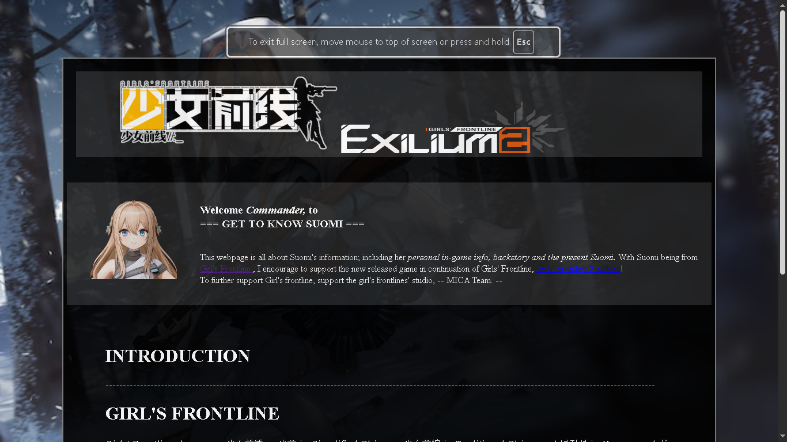
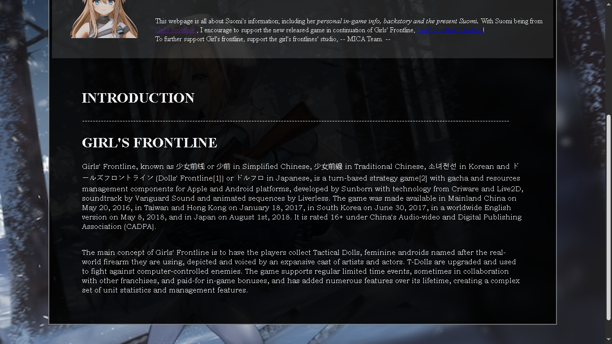

Currently I have only made one personal project and a few projects during highschool that I currently cannot find; although most of them are just HTML with no CSS.
This personal project was made from my own interest and got inspired by a webpage specifically made for Girl's Frontline.

